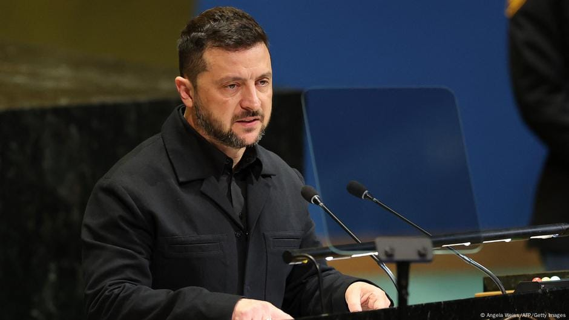

世界苦茶09月26日新闻 | 32条 | 中国发布减排指标,低于预期

中国发布减排指标,低于预期 | 特朗普签署TikTok收购令 | 俄罗斯因财政困境违背承诺加税 | 泽连斯基称战后卸任
每日三个新闻解读
苦茶数据
美元兑人民币：7.14（昨日7.13，前日7.11）
美元兑日元：149.66（昨日148.78，前日147.38）
上证指数：3847（昨日3858，前日3826）
标普500指数：6604（昨日6637，前日6656）
比特币：109461（昨日111691，前日112081）
布伦特原油：69.52（昨日69.14，前日67.76）
中国新闻
• 中共跨国施压，缅甸策展人因“得罪中国”逃离泰国： 中共跨国施压：缅甸策展人因“得罪中国”逃离泰国 一位策展人近期在泰国策划了一个批判中国、缅甸等国威权政府的展览，他预料到会遭遇阻力，但没料到反弹来得如此迅速，以致于他不得不从该国仓皇逃离。 策展人赛是来自缅甸的艺术家。他说，展览于7月开幕后两天后，他在美术馆的停车场里接到馆方负责人通过网络信息警告他，泰国警察正在馆内询问他的联系方式。 他说，由于担心自己会因参与这个展览而被捕并被遣返回邻国缅甸，他匆忙赶往曼谷机场，搭乘下一个有座位的航班飞到了伦敦，行李只能弃之不顾。 “我们料到会有某种正式的阻挠，但没想到会这么快，”赛说。缅甸军方2021年接管政府后，他逃离了该国。
• 波音交付中国首架777货机 ：美国航天航空器制造商波音已向中国金鹏航空交付首架777货机。这是中美关税战今年4月开打以来，波音向中国航司交付的首架崭新货机。波音中国星期四在官方微信公众号上说，波音星期三向金鹏航空交付了其引进的两架777货机中的首架飞机。金鹏航空说，777货机将补充该航司的747货机机队，实现高达3米的行业标准货物的无缝联运，同时具备针对高密度货物的107吨业载能力。
• 国防部称福建舰试验顺利 ：中国军方公布福建舰成功实施舰载机弹射起飞和着舰训练视频后，外界认为这意味着福建舰即将交接入列。中国国防部新闻发言人星期四对此回应说，福建舰试验训练正按计划顺利推进，“大家期盼的那一天不会太远了。”根据中国央视新闻报道，中国国防部举行例行记者会，国防部新闻发言人张晓刚大校在回答记者相关提问时说，歼-15T、歼-35和空警-600舰载机近日在福建舰上成功实施弹射起飞和着舰训练，标志着福建舰具备了电磁弹射和回收能力，为后续各型舰载机融入航母编队体系打下良好基础，在中国航母建设发展历程中具有里程碑意义。他说：“福建舰试验训练正按计划顺利推进，大家期盼的那一天不会太远了。”
• 中國首度宣示具體減排目標，分析指低於預期： 中国首度宣示具体减排目标 分析指低于预期 2025年9月25日中国国家主席习近平週三透过视讯在联合国气候变迁峰会致词，宣布中国2035年之前的气候目标：首先，温室气体净排放量要比峰值降低7%至10%；非化石能源的消费比例，则增加到能源消费总量的三成以上；此外，风电和太阳能发电的总装机容量，将增为2020年的6倍。 习近平说：“绿色低碳转型是时代潮流。盡管个别国家逆流而动，但国际社会应把握正确方向……推动制定和实施国家自主贡献，为全球气候治理合作注入更多正能量。” 这番话被外界解读为隐晦批评美国。
• 习近平出席新疆70周年庆典 ：正在新疆访问的中共总书记习近平，星期四上午出席新疆维吾尔自治区成立70周年庆祝大会。据中国央视新闻报道，习近平在乌鲁木齐市出席新疆维吾尔自治区成立70周年庆祝大会，同新疆各族各界干部群众代表一道，热烈庆祝自治区成立70周年。习近平率中央代表团星期二下午乘专机抵达乌鲁木齐，出席新疆维吾尔自治区成立70周年庆祝活动。
• 李强会见冯德莱恩谈中欧关系 ：中国国务院总理李强当地时间星期三在纽约会见欧盟委员会主席冯德莱恩时说，中欧作为世界重要两极，应展现责任担当，坚持战略自主，坚守公平正义，做世界的稳定性、确定性力量。根据新华社报道，李强对冯德莱恩说，今年是中欧建交50周年。中国国家主席习近平7月在北京会见主席女士和科斯塔主席，就进一步发展中欧关系达成重要共识，提供了战略指引。李强说，他同两位主席共同主持了第25次中国－欧盟领导人会晤，取得积极成果。中方愿同欧方一道落实好双方共识，秉持建交初心，加强团结协作，推动中欧关系健康稳定发展。
• 澳大利亚电影在中国被篡改为异性恋伴侣： 澳大利亚电影在中国被篡改成异性恋 一对同性情侣被篡改成异性恋的澳大利亚电影在中国引起了影迷的反感。由戴夫-弗兰科和艾莉森-布里主演的恐怖片《在一起》于 9 月 12 日在部分中国影院提前放映。在显示原始场景的截图在网上疯传后，影迷们才意识到一些场景被修改了。影片原定于 9 月 19 日公开上映，但截至本周四仍未在影院播出。据报道，影片的全球发行商 Neon 随后谴责了这一剪辑行为，称他们 "不同意未经授权的剪辑……并要求他们停止发行"。
• 中美财政部官员将技术会谈 ：知情人士称，美中两国官员将于星期四在美国财政部会面，以进行工作人员级别的技术性会谈。此会谈涉及贸易和经济问题，但不涵盖上周达成的涉短视频平台TikTok协议。路透社引述要求匿名的这名消息人士报道，此会谈也不会涉及美国财长贝森特与中国副总理何立峰将举行的下一轮高级别贸易谈判。周四会谈的重点将放在与前几轮会谈讨论过的贸易问题有关的技术细节。中美双方本月较早前在西班牙马德里举行会谈，就TikTok去向达成框架协议。美国总统特朗普预计星期四签署行政命令，宣布TikTok交易符合美国法律的要求，即中方所有权终止，否则TikTok将在美国关闭的要求。
亚太印太新闻
• 特朗普或10月底访日 ：日本外交部消息人士称，日本与美国官员已开始为美国总统特朗普10月底访问东京启动筹备工作，日方希望他在前往韩国出席亚太经济合作组织峰会并与中国国家主席习近平会面之前，先访问东京。日本执政联盟最大党自由民主党将在10月4日举行总裁选举，选出接替石破茂担任日本首相的新领袖。石破茂是在今年2月访问华盛顿时邀请特朗普访日。如果特朗普的东京行程确定，将是他首次与日本新任领袖会面。两人预计探讨包括美日贸易协议在内的经贸关系与美日防御合作。
• 韩称朝拥2吨高浓铀 ：韩国统一部长郑东泳星期四说，韩方相信朝鲜拥有多达2吨的高纯度浓缩铀。高纯度浓缩铀是用来生产核弹头的关键原料。郑东泳星期四罕见公开确认，情报机构估计，平壤纯度超过90%的高浓缩铀储量多达2000公斤。他说：“即使是在此刻，朝鲜四座设施的铀离心机也在运作。”
• 赖清德回应花莲堰塞湖争议 ：台湾花莲堰塞湖溢流导致重大伤亡引爆政治争议，对于国民党立委傅崐萁称堰塞湖发生时就希望中央用爆破方式处理，台湾总统赖清德回应称绝不可能。据联合新闻网报道，赖清德星期四到花莲勘灾时说，处理堰塞湖问题，大家很清楚不是那么容易的，需要时间。他说，堰塞湖7月底才真正形成，位于人车和机具难以到达之处，绝对不可能用爆破，即使用分洪道，也不是短时间可以完成的。所以委员会的决议就是要持续监测，把正确讯息提供给县政府，做为撤离民众的依据。
• 泰柬拟减少边境驻军 ：泰国新任外交部长西哈萨·蓬集格指出，泰国和柬埔寨应减少在两国边境的驻军，共同努力缓和紧张局势。西哈萨于星期三与泰国首相阿努廷一起宣誓就职。他强调，必须遵守泰国和柬埔寨在7月结束为期五天的致命冲突时达成的停火协议。他在就任外交部长第一天就告诉记者，他的首要任务是确保两国之间的和平。他补充说，两国需要落实本月对话期间商定的联合行动，包括减少驻军、清除地雷和打击非法活动。
• 朝鲜外长崔善姬将再访华 ：朝鲜外长崔善姬将从星期六起，展开本月第二次的访华之行。中国外交部在官网宣布，应中共政治局委员、中国外交部长王毅邀请，崔善姬将于9月27日至30日访华。朝鲜领导人金正恩本月较早前为出席纪念中国人民抗日战争暨世界反法西斯战争胜利80周年活动，乘专列访问中国。崔善姬和金正恩的女儿金珠爱也跟随金正恩出访。
• 芬太尼跨国贩毒渗透马来西亚 ：芬太尼跨国贩毒网络渗透马来西亚，警察总长莫哈末卡立表明，警方将持续出击，誓言斩断贩毒集团犯罪链。根据网络介绍，芬太尼是一种强效的人工合成类药物，效力是吗啡的100倍，更是海洛英的30倍至50倍，因吸食芬太尼后一般会身体僵硬、意识混乱，像“丧尸”一样在街头晃动，故称“丧尸毒”。莫哈末卡立星期三在记者会上指出，马国的芬太尼和其他合成毒品活动，已经形成跨国网络，不仅在国内黑市流通，还走私到国外。
科技新闻
• 特朗普签署TikTok收购令 ：美国总统特朗普签署行政命令，推进美国投资者向TikTok中国母公司字节跳动收购TikTok美国业务的计划，并强调这项收购计划将符合美国2024年一项法律对国家安全的要求。美国副总统万斯则说，TikTok估值为140亿美元。综合彭博社和路透社报道，特朗普星期四在白宫举行的签署仪式上说，科技投资者戴尔和媒体大亨默多克以及“大概四五名绝对世界级的投资者”，将参与收购TikTok计划。两名熟悉这项交易的消息人士透露，包括甲骨文和私募股权公司银湖资本在内的三家投资者，将持有TikTok美国公司约50%的股份。
• xAI起诉OpenAI窃取商业机密 ：当地时间24日提交的诉讼文件显示，马斯克旗下人工智能初创公司 xAI 在美国加州联邦法院起诉竞争对手OpenAI，指控其窃取商业机密以在人工智能技术竞赛中获取不正当优势。xAI提交的诉讼称，OpenAI存在“令人深感不安的惯例”，即通过挖角xAI前员工来获取与人工智能聊天机器人Grok相关的商业机密。诉讼称：“OpenAI专门锁定了解xAI关键技术和商业计划，包括对 xAI 源代码以及推出数据中心的营运优势有认识的个人，通过非法的方式诱使这些员工违反他们对 xAI 的保密责任和其他责任。”周四，两家公司的发言人没有立即回应对该诉讼的评论请求。
• 马斯克xAI低价卖Grok给政府 ：马斯克旗下的 xAI 已与美国政府采购部门达成协议，将其人工智能聊天机器人Grok以低于 1 美元的价格出售给联邦政府，与OpenAI和Anthropic展开竞争。根据 xAI 与美国总务管理局签订的协议，联邦机构使用 xAI 的Grok聊天机器人一年半，仅需支付42美分。而 OpenAI和 Anthropic分别提供企业版和政府版ChatGPT和Claude，定价均为每年1美元。联邦机构的大幅折扣包括获得 xAI 工程师的帮助来整合该技术。 xAI 在今年早些时候曾接近被批准为 GSA 供应商，但据称因Grok在 X 平台上生成反犹太帖子，并自称 “机械希特勒”，双方原定的合作破裂。
财经新闻
• 中央汇金ETF获逾500亿美元收益 ：被视为中国“国家队”之一的中央汇金公司，通过买进本地交易所交易基金 ，获得超过500亿美元的帐面收益。彭博行业研究提供了上述数据，并说这一情况凸显了政府支持股市的规模。文件显示，中央汇金2023年开始积极投资中国ETF，截至今年8月底持有1800亿美元的此类资产。这有助于稳定国内股市，并在股市升至多年高点时，获得可观的收益。
• 中国列六美企入管制清单 ：中国星期四宣布，将三家美国企业列入出口管制管控名单，另外三家美企也被列入不可靠实体清单。中国商务部在官网公告，为维护国家安全和利益，履行防扩散等国际义务，决定将亨廷顿·英格尔斯工业公司、扁平地球管理公司、全球维度公司这三家美国实体，列入出口管制管控名单。中国商务部规定，禁止向上述三家美国实体出口两用物项；正在开展的相关出口活动应当立即停止。特殊情况下确需出口的，出口经营者应当向商务部提出申请。
• 鲍威尔未释降息信号金价走高 ：美国联邦储备局主席鲍威尔星期二发言中，没有透露会否在下月支持降息以及明确降息时间表。不过，摩根大通预计，金价有望持续上扬，在2026年中升至每安士4050美元至4150美元，创历史新高。截至星期四下午3时30分，金价已走高至每安士3775.2美元。鲍威尔此前指出，当前政策处于适度偏紧状态。但他也指出，未来通胀和就业状况恶化均可能带来双向风险，利率前景不存在无风险路径。
• 欧议会将批美欧关税协议 ：欧洲议会预计将批准欧洲联盟与美国敲定的欧盟输美商品缴纳15%关税的协议，协议涵盖几乎所有产品。欧洲议会议长梅索拉星期三在纽约举行的彭博慈善基金会全球论坛上说：“我们会达成协议，我相当乐观，但不预先判断结果……当然，议会将密切审查。”欧洲委员会主席冯德莱恩7月与美国总统特朗普敲定了这项协议。根据协议，欧盟还将取消对所有美国工业品的关税。冯德莱恩形容这份协议“即使不完美，但也强有力”，并补充称有必要为企业提供稳定性和确定性。
• 美政府拟停摆推永久裁员计划 ：美国白宫预算办公室要求联邦机构就如果出现政府停摆起草大规模裁员的计划。此举将大大颠覆近年来政府停摆期间的常规做法。以往停摆期间如果资金短缺，非必要政府工作人员通常会暂时停职，资金到位后返岗，通常还会补发工资。彭博社引述政府的通知说，各机构需确定哪些项目和其他支出项的可自由支配资金将于10月1日到期，且没有其他资金来源。各机构随后将起草计划，将不符合特朗普政府优先事项领域中的工作岗位永久裁掉，如果政府在10月1日停摆，这些裁员计划将启动。裁员具体范围目前尚不清楚。 （翻评：逼民主党接受共和党协议。）
• 博世未来五年裁员1.3万 ：德国汽车零部件供应商博世周四表示，未来五年将裁减 1.3 万个岗位。与此同时，博世正在大力押注AI技术以提升生产力。博世声称，公司计划在2030年底之前分阶段裁减员工，主要集中在博世移动出行业务部门。博世劳资事务总监格罗施表示：“我们必须紧急着手提升出行业务板块的竞争力，并持续进行结构性的成本削减。这对我们来说非常痛苦，但遗憾的是已经别无选择。”此次裁员计划是在去年公布的9000人裁员方案之外追加的，累计裁员规模将达2.2万人。为了降低成本，博世计划利用AI技术提升生产效率，重点应用在智能制造环节以及供应链优化上。
俄乌战争
• 泽连斯基称战后卸任 ：乌克兰总统泽连斯基在星期四刊登的采访中说，他准备在与俄罗斯的战争结束后卸任。泽连斯基在接受美国媒体Axios视频采访时说：“如果我们结束与俄罗斯的战争，是的，我准备不去，因为选举不是我的目标。”他补充说：“在这段非常艰难的时期，我非常希望与我的国家在一起，帮助我的国家。我的目标是结束战争。”
• 乌克兰战争耗尽财政，普京被迫再次增税： 三年半之后，总统弗拉基米尔·普京不得不越来越依赖普通俄罗斯民众来支付其在乌克兰的战争费用。俄罗斯财政部周三表示，计划将增值税提高两个百分点至22%，这是旨在填补公共财政迅速扩大的缺口的三年计划的一部分。去年，增值税占政府总收入的15%以上。在年初大幅提高个人所得税后，普京承诺在2030年之前不会对税制进行任何重大改革。然而，央行行长埃尔维拉·纳比乌琳娜在本月初的新闻发布会上警告称，不断扩大的预算赤字是通胀的最大风险，根据官方计算，目前通胀率已超过8%。
• 俄美外长纽约会晤谈乌危机 ：俄罗斯外长拉夫罗夫与美国国务卿鲁比奥在纽约举行的联合国大会高级别周会议期间会晤，并就解决乌克兰危机交换意见。中国新闻社引述俄罗斯外交部的通报说，在俄美领导人阿拉斯加会晤达成的共识基础上，双方星期三会面时重申愿寻求乌克兰危机的和平解决方案。俄美外长在纽约联合国大会期间会晤后未对记者发表任何评论。法新社引述美国国务院发言人汤米·皮戈特发表的声明称，鲁比奥在会晤中“重申了总统特朗普停止杀戮的呼吁，以及莫斯科需要采取有意义的措施，以持久解决俄乌战争”。
• 北约应对俄领空问题现分歧 ：北大西洋公约组织盟国在如何应对俄罗斯侵犯领空问题上难以达成一致，防务伙伴之间甚至公开唱反调。星期二晚间，德国警告称击落俄罗斯飞机存在风险，而几乎同时，美国总统特朗普对此展现出更强硬的立场，并得到了波兰和波罗的海国家的支持。星期一，波兰总理图斯克威胁要击落空中威胁，并直言这一政策“没有讨论余地”。彭博社指出，这些言辞凸显出北约内部的分歧已经达到令人担忧的程度，而俄罗斯总统普京在测试北约的决心。近期一系列俄罗斯飞机入侵北约盟国领空的事件在联盟东翼乃至更广泛范围引发警惕。
• 乌克兰空军称在扎波罗热州上空击落俄罗斯苏-34轰炸机： 乌克兰空军称乌克兰在扎波罗热州上空击落俄罗斯苏-34轰炸机 据乌克兰空军报道，9月25日凌晨，乌克兰军队在扎波罗热州击落了一架俄罗斯苏-34战斗机。空军称，这架苏-34战斗机于当地时间凌晨4点左右在前线扎波罗热地区被击落。据报道，袭击发生时，这架战机正在用制导航空炸弹攻击扎波罗热市。
国际新闻
• 国际足联拟世界杯扩军64队 ：随着2026年世界杯已确定扩军至48支球队，国际足联正在考虑在2030年这个大赛百年庆典之际，将球队数量进一步扩增至64队。由于这个想法褒贬不一，国际足联领导人与乌拉圭和巴拉圭的国家元首，以及南美洲足联和阿根廷足总的负责人举行了会晤。南美洲足联主席多明格斯在社交媒体上发文说：“我们呼吁团结、创新和相信宏大梦想。因为当足球被所有人分享时，这样的庆贺才是真正普世的。”
• 古特雷斯吁加速气候行动 ：联合国秘书长古特雷斯在联合国气候变化峰会上指出，清洁能源具有竞争力，气候行动势在必行。联合国气候变化峰会星期三在纽约联合国总部举行。新华社引述古特雷斯说，到本世纪末，全球气温上升幅度仍有可能控制在较工业化前水平升高1.5摄氏度以内。清洁能源正在推动就业、增长和可持续发展，用来生产最快、最便宜的电力，使经济免受动荡的化石燃料市场的影响，保障能源安全和主权，并助力为所有人提供清洁和负担得起的能源。古特雷斯称赞《巴黎协定》发挥了作用。他说，过去10年，预计的全球气温上升幅度已从4摄氏度降至不到3摄氏度。现在需要新的2035年计划，以实现与1.5摄氏度控温目标一致的大幅减排，涵盖所有排放和行业，并加速全球范围内的公正能源转型。
• 法国前总统萨科齐因接受来自利比亚前领导人卡扎菲的非法竞选资金被判处5年监禁： 巴黎刑事法庭认定萨科齐犯有共谋罪，在2005年至2007年期间，计划通过外交支持，换取利比亚为其竞选活动提供资金。被动腐败等其他3项检方指控未获法庭支持。萨科齐谴责法院判决，认为他是不公正的受害者，他将提出上诉。不过根据法院裁定，即使他上诉也会被监禁。
• 美国国防部长皮特·赫格塞思已召集世界各地的美军高级官员下周在弗吉尼亚州匡蒂科举行会议。目前尚不清楚会议主题，也不清楚最终可以参与的官员人数，但这么多高级官员同时在同一地点参会极为罕见。